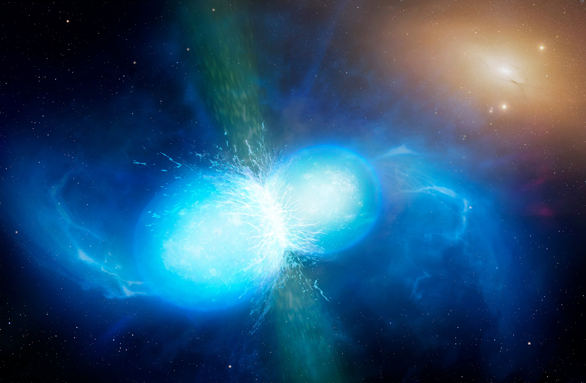
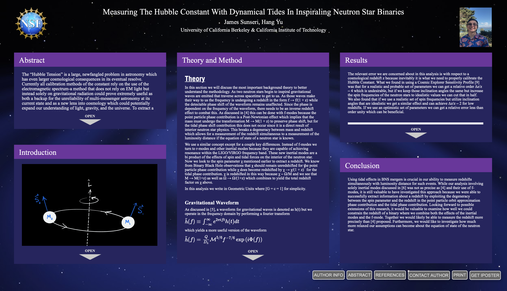

LIGO Caltech Summer Undergraduate Research Fellowship
I had the privilege of being selected to be a participant in the LIGO SURF program in Summer 2020. In this program I worked closely with Dr. Hang Yu to investigate measuring the Hubble Constant using dynamical tides in inspiraling neutron star binaries. For a quick read, you can check out this Astrobites Post I wrote on this research project.
Abstract:
The “Hubble Tension” is a large, newfangled problem in astronomy which has even larger cosmological consequences in its eventual resolve. Currently all calibration methods of the constant rely on the use of the electromagnetic spectrum-a method that does not rely on EM light but instead solely on gravitational radiation could prove extremely useful as both a backup for the unreliability of multi-messenger astronomy at its current state and as a new lens into cosmology which could potentially expand our understanding of light, gravity, and the universe. To extract a cosmological redshift from a gravitational waveform, one can look at both the point particle approximation phase contribution and the tidal phase contribution to the total phase of a gravitational waveform which allows for a break in the redshift degeneracy found in the mass parameters, which we can exploit to extract a cosmological redshift and thus the Hubble constant. Our analysis incorporates both f-modes and r-modes into the tidal phase contribution that are found in binary neutron star inspirals. We use the Fisher Matrix Analysis to generate our relevant possible errors on each parameter of the waveform.
Click Here for a presentation I gave of my research in my research seminar course at UC Berkeley. In the audience is Professor Mariska Kriek and my fellow peers. Below is the link to the iPoster I presented at the 237th American Astronomical Society Meeting (click on the image to access the full interactive poster).
